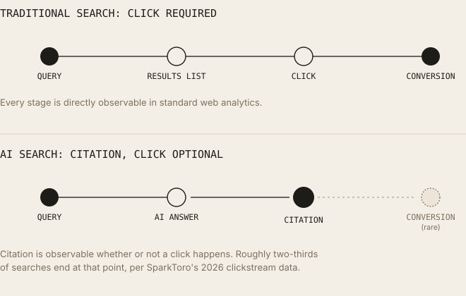

Citation Is the New Click: Measuring Success in AI Search
A growing majority of searches now end without a click. A new, separate visibility layer exists beneath it: whether content gets cited as evidence at all.
Executive Summary
Search measurement was built around a single, countable event: a click. Rankings, CTR, sessions, and conversions all presuppose that a user leaves a results page and lands on a website, an event Google Analytics and every SEO dashboard was designed to capture. AI-generated answers break that assumption for a growing share of queries: a user's question gets resolved inside the AI interface itself, with no click required. SparkToro's 2026 clickstream analysis puts Google's overall zero-click rate at roughly two-thirds of searches, and finds AI Overviews specifically associated with a sharp drop in click-through when they appear. This does not mean traffic has stopped mattering, clicks that do occur, including AI referral clicks, remain measurable and in several published studies convert at meaningfully higher rates than standard organic traffic. What it means is that a new, separate visibility layer exists beneath the click: whether content gets selected and cited as evidence inside a generated answer at all. This article defines that layer precisely, distinguishes documented findings from vendor-reported figures and reasonable inference, and states clearly what businesses can and cannot yet measure.
Introduction
Traditional SEO success was measured by rankings and clicks because the search interface itself made no other measurement possible, a results page is a list of links, and the only observable user action is which one they select. Every foundational analytics metric (CTR, sessions, bounce rate, conversions) is built on that single event.
AI Overviews, AI Mode, Copilot, ChatGPT, Perplexity, and Claude change what the interface itself does before a click becomes possible: increasingly, the system synthesizes a direct answer and the user's question is resolved without ever seeing, let alone clicking, a ranked list of links. This is documented, measured behavior, not speculation, and this article treats it as such throughout, distinguishing carefully between findings from named, citable studies and figures that are directionally consistent across sources but not identical, a distinction this piece will flag explicitly wherever it applies. What follows defines what a "citation" actually is in this context, what's genuinely new about measuring it, and, following this article's own constraint, is explicit that clicks have not disappeared and citations do not replace them; they measure two different things.
How Search Success Was Traditionally Measured
Rankings, a page's position in the ordered list of results for a given query, historically the primary lever the entire SEO discipline optimized for, because position correlated directly with click volume.
Organic traffic, the count of sessions arriving at a site from unpaid search results, the aggregate outcome rankings were meant to produce.
Click-through rate (CTR), the percentage of people who saw a result (an impression) and clicked it; FirstPageSage and similar position-by-position CTR studies have long documented that CTR drops sharply with each position below the first result, which is why ranking position mattered so much financially.
Sessions, the unit Google Analytics and similar platforms use to group a user's activity on a site into a single visit, the standard denominator for engagement and conversion metrics.
Conversions, a defined goal completion (purchase, signup, lead form) attributed to a session, the metric that ultimately connected search visibility to revenue.
Bounce rate, historically, the percentage of single-page sessions with no further interaction; a signal (imperfect and much-criticized) for whether a page satisfied the visit's intent.
Engagement, broader behavioral signals (time on page, pages per session, scroll depth) used alongside conversions to assess whether traffic was valuable, not just present.
Why clicks became the primary KPI: because the click was the only observable, attributable event connecting a search interface to a website's own analytics. Every metric above is downstream of that one event, without a click, none of Google Analytics' session-based measurement framework has anything to record.
How AI Search Changes User Behaviour
AI Overviews and AI Mode are Google's generative features, layered, per Google's own stated architecture, on its existing Search index and ranking systems rather than a separate system. Copilot is Microsoft's AI assistant, integrated into Bing and other Microsoft products. ChatGPT, Perplexity, and Claude are standalone conversational AI products that can incorporate live web search and retrieval when answering.
The documented behavioral shift, with figures attributed precisely because they vary meaningfully by source and methodology: SparkToro's June 2026 clickstream study reports Google's overall zero-click rate, searches ending with no click to any external result, at roughly 68%, up from the 58.5% figure SparkToro and Datos reported in their original 2024 study; other 2026 analyses (Similarweb, Digital Applied) place the figure between roughly 60% and 65% depending on measurement window and market. This range should be read as directionally consistent (a majority, and a growing majority, of searches end without a click) rather than as a single settled number, the underlying studies use different data sources and time windows, and this article will not present any single figure as more authoritative than SparkToro's, since SparkToro's methodology (Rand Fishkin's clickstream-panel approach) is the most widely cited and longest-tracked source in this specific space.
AI Overview-specific data: per Ahrefs' CTR analysis (cited within SparkToro's 2026 study), organic click-through drops by roughly 58 to 60% when an AI Overview appears on a results page, and AI Overviews themselves now appear on more than 20% of Google searches. Pew Research's own study, an independent source distinct from the SEO-industry vendors above, found that only about 1% of AI Overview impressions led to a click on a cited source, and that roughly 26% of sessions where an AI Overview appeared ended with no further browsing at all (a documented session-abandonment rate, not an SEO-vendor estimate).
AI Mode, which replaces the ranked-link interface with a conversational one rather than displaying it alongside an AI summary, is reported by at least one source (Semrush, via secondary citation) at a roughly 93% zero-click rate, notably higher than AI Overviews, though this article found this figure in only one primary chain of citation and flags it as less independently corroborated than the AI Overview figures above. SparkToro's own June 2026 study separately notes that only about 0.34% of measured Google searches transitioned into AI Mode specifically during its January to April 2026 study window, while citing Google's own I/O 2026 statement that AI Mode had surpassed 1 billion monthly users with query volume more than doubling each quarter, a vendor-reported, not independently verified, growth claim.
What Is a Citation?
Citation, in this article's usage, is the event of an AI system explicitly naming or linking to a specific source as the origin of a claim within a generated response, the AI-search equivalent of a footnote or an in-text reference.
Source attribution is the broader mechanism a system uses to connect specific output claims back to the retrieved material that supports them; a citation is the user-visible expression of successful source attribution.
Grounding, as covered in detail elsewhere in this research, is the retrieval-augmented-generation process of supplying a model with retrieved content as context; citation is a possible, but not universal, downstream output of grounding, a system can ground a response in retrieved content without necessarily surfacing an explicit citation for every claim.
Evidence and reference, in IR usage, describe the same underlying concept from different angles: evidence is the retrieved material itself; a reference is the pointer back to where that evidence came from.
Distinguishing citation from adjacent, older concepts:
- Hyperlinks, a traditional web link, present regardless of whether any system judges the linked content relevant to a specific claim; a citation is judgment-bearing in a way a generic hyperlink is not.
- Mentions, a brand or entity named in AI output without necessarily being tied to a link or a specific sourced claim; a mention is weaker than a citation because it carries no attribution mechanism.
- AI citations, the specific case this article focuses on: an AI system's explicit sourcing of a generated claim to a specific, named or linked origin.
- Search snippets, the short, extracted text Google displays beneath a traditional organic result; a snippet is drawn from a single source and displayed verbatim, distinct from a citation's role of supporting a synthesized, multi-source answer.
- Knowledge panels, Google's structured information boxes, drawing on Knowledge Graph data rather than being a synthesized, generated answer; a knowledge panel is not a citation mechanism, though it may itself link out to a
sameAs-linked source.
Why Citations Matter
Trust and authority. A citation functions as an explicit, visible signal that a claim has a traceable origin, which is directly relevant to how a user (and, per Google's own quality-rater guidelines, how E-E-A-T assessment) evaluates the reliability of an answer.
Source verification. A citation gives a user (or a downstream auditor) the ability to check a generated claim against its original source, a mechanism with no equivalent in a purely synthesized answer with no attribution at all.
Grounding. Citations are the most directly observable, external evidence that grounding occurred at all, from outside a system's own architecture, a citation is often the only visible proof that a specific piece of content was actually retrieved and used, as distinct from the model's own parametric knowledge.
Knowledge attribution. In systems that track provenance at the claim level rather than the response level, citations allow specific facts to be traced to specific sources, a more granular form of attribution than a single "sources" list appended to an entire response.
Visibility, and why it can matter even without a click: brand awareness research generally (not specific to AI citations, since no study reviewed for this article isolates AI-citation-specific brand-lift effects with controlled measurement) supports the general principle that being named as an authoritative source in front of an engaged reader carries some awareness value independent of whether that reader clicks through immediately. This article states plainly that it found no controlled study specifically measuring AI-citation brand-awareness lift, and this claim should be read as a reasonable extension of general marketing-exposure research, not as an AI-search-specific finding.

Citation is observable whether or not a click happens. Most searches now end there.Clicks vs. Citations
| Dimension | Clicks (Traditional) | Citations (AI Search) |
|---|---|---|
| Traffic | Directly measured, a session in Google Analytics | Not itself traffic; a citation may or may not lead to a click |
| Visibility | Requires a click to be observed at all | Observable independent of any click, a citation happens whether or not the user acts on it |
| CTR | A page-level, position-based metric with decades of documented benchmark data | No standardized equivalent yet published; "citation rate" is an emerging, non-standardized concept |
| Citation Rate | Not applicable to traditional search | The (currently non-standardized) frequency with which a source is cited across relevant queries |
| Sessions | The foundational unit of web analytics | Not a citation-layer concept, a citation precedes and is separate from any resulting session |
| Answer Presence | Not applicable | Whether a brand/source appears at all within a generated answer, regardless of whether it's the top-cited source |
| SERP Position | A single, ordered ranking per query | Not directly analogous, a generated answer can cite multiple sources without an equivalent linear ranking |
| Retrieval Frequency | Not applicable | How often a source's content is retrieved as a candidate, whether or not it's ultimately cited in the visible output |
| Page Views | A downstream engagement metric, post-click | Not applicable pre-click; only relevant to citations that do convert to a click |
| Reference Frequency | Not applicable | Related to citation rate, how often a specific piece of content is referenced across a sampled set of prompts |
| Backlinks | A documented ranking input (PageRank-derived) | Not a citation mechanism itself, though backlink-derived authority may indirectly influence which sources a system judges credible enough to cite |
| Grounded Mentions | Not applicable | A citation-adjacent concept, being referenced within a grounded answer without necessarily receiving an explicit, linked citation |
Where both metrics are valuable, stated directly per this article's own constraint: clicks remain the only metric that connects search visibility to on-site, revenue-attributable behavior, nothing about citations changes that. Citations add a measurable layer before that point, capturing visibility events that, per the zero-click data above, increasingly never reach the click stage at all. Neither metric subsumes the other.
New Metrics for GEO
The following metrics are proposed as a practical framework by this article, they are author recommendations, not standardized, published industry metrics. No primary source reviewed for this research, not Google, OpenAI, Anthropic, Microsoft, nor an academic IR venue, defines or publishes a formal specification for any of these terms. Some appear informally across GEO-industry vendor content with inconsistent definitions; this article is explicit that it is proposing a coherent framework, not reporting an established standard.
- Citation Share, the proportion of citations for a given topic or query set that go to a specific source, relative to its competitors, a citation-layer analogue to organic market share.
- Prompt Citation Rate, the percentage of a sampled, representative set of relevant prompts (across one or more AI platforms) in which a source receives an explicit citation.
- Answer Presence Score, a binary or graded measure of whether a source appears at all within a generated answer, distinct from and broader than being the specific, explicitly cited source.
- Retrieval Frequency, how often a source's content is retrieved as a candidate during the retrieval stage, independent of whether it's ultimately surfaced or cited in the final output, a metric only measurable by whoever controls the retrieval pipeline itself, meaning it is generally not observable to an outside content owner at all.
- Grounding Confidence, a proxy metric (introduced in this article's own prior research on retrieval readiness) for how strongly a piece of content would score in a hypothetical retrieval pass against a target query, testable via an open embedding model.
- Citation Diversity, the range of distinct sources an AI system draws on across a sampled set of related queries, relevant for understanding whether a market is citation-concentrated (a few dominant sources) or citation-diverse.
- Prompt Coverage, the proportion of a brand's relevant topic space that has been tested against AI platforms to establish a citation baseline, a monitoring-completeness metric rather than a performance metric.
- Knowledge Visibility Score, a composite, author-proposed index combining citation rate, answer presence, and mention frequency into a single directional indicator, explicitly not a validated or externally benchmarked score.
How organizations could evaluate these, practically and with appropriate caution: running a consistent, repeated sample of relevant prompts against major AI platforms and manually or programmatically logging citation and mention outcomes is the most direct, currently available method, several third-party monitoring tools have emerged to automate this sampling, though none of their methodologies were independently verified as part of this article's research, and query-sampling approaches inherently produce estimates, not exhaustive measurement, since no platform publishes a complete log of what it retrieves or cites.
How Businesses Should Measure AI Visibility
- Brand mentions, tracked via the same prompt-sampling approach described above, distinguishing a bare mention from an explicit, sourced citation.
- Citation frequency, the core metric this article's proposed framework centers on; requires repeated, consistent sampling rather than a one-time check, since AI-generated answers are not static and can vary between identical queries.
- Prompt tracking, maintaining a defined, representative set of queries relevant to a business's topic area, tested consistently over time to establish trend data rather than isolated snapshots.
- AI search monitoring, the general practice of the above two points, implemented as an ongoing process rather than a one-time audit.
- Entity coverage, whether a business's key entities (products, people, the organization itself) are consistently, correctly represented and disambiguated across the sources an AI system might draw on.
- Knowledge graph consistency, whether structured facts about an entity (via
sameAs-linked profiles, Wikidata, Wikipedia) are accurate and consistent, since inconsistency plausibly creates ambiguity a retrieval system has to resolve, though no study reviewed here directly measures citation-rate impact from knowledge-graph inconsistency specifically. - Referral traffic from AI platforms, the clicks that do occur remain fully measurable in standard web analytics, with an important, documented caveat below.
- Attribution challenges, GA4 has no native AI-platform channel grouping as of the most recent documented guidance reviewed for this article; AI referral traffic is commonly miscategorized into Referral, Direct, or Unassigned buckets by default, and platforms like ChatGPT only began reliably passing
utm_sourceparameters in mid-2025, meaning historical AI-referral data prior to that point is likely undercounted in most businesses' existing analytics.
On referral-traffic quality, where it does occur, cited with attribution given the spread across studies: a Seer Interactive benchmark study, cited across multiple secondary sources reviewed for this article, found ChatGPT-referred sessions converting at approximately 15.9%, Perplexity at 10.5%, and Claude at 5.0%, against a Google organic baseline of roughly 1.76% in the same analysis. Separate figures from other named studies (Ahrefs, Microsoft Clarity, Adobe) report conversion multipliers in a similarly elevated range but with different specific numbers, this article treats the general finding (AI-referred traffic that does convert, converts at multiples of organic baseline conversion rates) as reasonably well corroborated across independent sources, while treating any single specific multiplier as study-specific rather than a settled industry-wide figure.
Common Misconceptions
- "Citations replace traffic." Incorrect. A citation is a visibility event; it does not itself generate a session, a page view, or revenue. Pew Research's own finding, roughly 1% of AI Overview impressions leading to a click, makes the gap between citation and traffic starkly explicit rather than a minor nuance.
- "Clicks no longer matter." Incorrect. Clicks that do occur, including AI referral clicks specifically, remain fully measurable and, per the Seer Interactive and related studies cited above, convert at rates meaningfully above organic baselines in the data reviewed for this article.
- "AI citations are backlinks." Incorrect. A backlink is a persistent, crawlable, page-level HTML element with documented ranking relevance (PageRank). A citation is a transient event within a single generated response, re-evaluated at each query, with no equivalent persistent record on the source page itself.
- "Being cited guarantees conversions." Incorrect, for the same reason clicks don't guarantee conversions in traditional search, a citation is a visibility event upstream of any user action, and the gap between visibility and revenue requires the same downstream conversion-optimization work regardless of which channel generated the visibility.
- "Rankings are obsolete." Incorrect, and addressed in detail in this article's companion research on retrieval versus ranking: Google's own documentation states a page must already be indexed and eligible for standard ranked Search results before it can be considered for AI Overviews inclusion at all.
Practical GEO Checklist
- Build genuinely authoritative content, original research, data, or expertise that can't be easily reproduced by summarizing existing sources, a category multiple GEO-industry analyses (with unverified methodology, flagged as such here) consistently associate with citation likelihood.
- Improve entity clarity, explicitly named, disambiguated entities, per this article's companion research on entity resolution.
- Publish original research or data where feasible, content AI systems cannot simply summarize from elsewhere in the corpus has a structural advantage.
- Use structured data on confirmed-relevant types (Article, Organization, Person, FAQPage), per Google's own stated guidance for its AI features specifically.
- Strengthen topical authority by covering a subject area comprehensively rather than in isolated, disconnected pieces.
- Monitor AI citations via consistent, repeated prompt sampling rather than one-time checks.
- Maintain factual accuracy rigorously, an inaccurate claim that gets cited and then corrected publicly carries reputational risk with no traditional-SEO equivalent.
- Earn trustworthy, third-party references, citations from other credible sources plausibly feed into how AI systems assess a source's own credibility, though this specific mechanism isn't independently confirmed by any primary source reviewed here.
- Increase information density, remove filler that dilutes the ratio of citable, verifiable claims per section.
- Measure visibility beyond clicks, implement the citation-tracking practices described above as a standing process, not a one-time audit.
- Set up AI-referral tracking in GA4 explicitly, given its lack of a native AI channel grouping.
- Ensure named authorship and credentials are present and machine-readable (
Personschema), consistent with the E-E-A-T framework carried forward into AI features per Google's own stated architecture. - Write self-contained, citable claims, sentences that make sense as a standalone reference, connecting directly to this article's companion research on chunk-level retrieval readiness.
- Track citation diversity in your topic area to understand whether the space is citation-concentrated or fragmented across many sources.
- Prioritize prompt coverage before optimizing for citation rate, you cannot improve what you haven't first measured across a representative query set.
- Treat AI-referral conversion data with real weight in resourcing decisions where it's available, the conversion-rate gap reported across multiple named studies, while numerically inconsistent between sources, is directionally consistent enough to inform prioritization.
- Don't assume citation performance transfers evenly across platforms, ChatGPT, Perplexity, Gemini, and Claude have documented, substantially different referral-traffic volumes and conversion behavior in the studies reviewed here.
- Audit existing analytics for AI-referral miscategorization, particularly for any period before mid-2025, when consistent
utm_sourcetagging from major platforms was not yet reliably in place. - Pair citation monitoring with the retrieval-readiness and chunk-quality practices detailed in this article's companion research, a citation is a downstream outcome of successful retrieval, not an independent lever.
- Treat every metric proposed in this article's "New Metrics for GEO" section as directional and internally useful, not as a benchmarked, externally validated standard, and say so explicitly when reporting them internally.
Future Outlook
AI Mode. Its current, comparatively low query share (0.34% of measured searches in SparkToro's early-2026 window) alongside Google's own reported billion-plus-user, rapidly-doubling query volume suggests a genuine near-term trajectory worth monitoring, though this article treats Google's own growth figures as vendor-reported claims rather than independently verified data.
Agentic search. As AI systems increasingly perform multi-step tasks rather than answering single queries, the citation event itself may become less singular, a single agentic session could draw on, and potentially cite, many sources across several intermediate steps, a reasonable architectural extrapolation rather than a documented, measured pattern in any named production system reviewed here.
Persistent AI memory. Whether citation-worthy content increasingly gets drawn from session-spanning memory rather than fresh, per-query retrieval is an open, unresolved question this article's companion research on retrieval architecture already flagged as undocumented by any major AI lab's public statements.
Citation-aware retrieval. Systems that explicitly optimize retrieval for citation quality (rather than treating citation as an incidental byproduct of grounding) represent a plausible, technically coherent next step in RAG-system design, though no primary source reviewed for this article describes this as a shipped, named production capability distinct from standard grounding.
Brand authority and knowledge graphs. Google's own AI Overviews documentation already names the Knowledge Graph as a current source for generative responses; a source's ability to establish and maintain accurate presence within open (Wikidata) and proprietary knowledge graphs plausibly compounds in relevance as citation-aware systems mature, an inference consistent with but not separately proven by the sources reviewed here.
Future analytics platforms. Given GA4's documented lack of a native AI-referral channel as of this article's research, and the emergence of third-party citation-monitoring tools (whose methodologies this article did not independently verify), it's a reasonable expectation that mainstream analytics platforms will eventually build native AI-citation and AI-referral reporting, but no primary source from Google, Adobe, or another major analytics vendor was found committing to a specific roadmap for this during this article's research.
Key Takeaways
- A citation is an explicit, judgment-bearing act of source attribution within a generated AI response, distinct from a hyperlink, a mention, a search snippet, or a knowledge panel.
- SparkToro's 2026 study puts Google's overall zero-click rate at roughly 68%, up from 58.5% in its 2024 baseline study, a documented, if source-dependent, trend rather than a single precise figure.
- Pew Research found only about 1% of AI Overview impressions led to a click on a cited source, and roughly 26% of AI-Overview sessions ended with no further browsing at all.
- Clicks have not disappeared and citations do not replace them, this article states this explicitly per its own governing constraint, and the evidence throughout supports treating them as complementary, not substitutable, metrics.
- AI referral traffic that does convert, converts at rates meaningfully above organic baselines across multiple independently named studies (Seer Interactive, Ahrefs, Microsoft Clarity), though the specific multiplier varies by study and shouldn't be treated as one settled number.
- No primary source, Google, OpenAI, Anthropic, or an academic venue, publishes a standardized citation-rate or visibility metric; the framework this article proposes (Citation Share, Prompt Citation Rate, and related terms) is an author recommendation, explicitly labeled as such.
- Backlinks and AI citations are structurally different mechanisms, a backlink is a persistent, crawlable page element; a citation is a transient, re-evaluated-per-query event with no equivalent persistent record.
- Google's own documentation requires standard ranking eligibility as a precondition for AI Overviews inclusion, citations do not bypass ranking, they sit on top of it.
- GA4 has no native AI-referral channel grouping, and major platforms only began reliable UTM tagging in mid-2025, meaning most businesses' historical AI-referral data is very likely undercounted.
- Measuring AI visibility currently requires deliberate, repeated prompt sampling rather than a native, platform-provided reporting mechanism, this is a genuine measurement gap this article states plainly rather than implying a tool exists to close it seamlessly.
Glossary
- Zero-click search
- A query resolved by the search interface itself (via a snippet, AI Overview, knowledge panel, or similar feature) with no click to an external result.
- Citation
- An AI system's explicit attribution of a generated claim to a specific, named or linked source.
- Grounding
- Supplying a generation model with retrieved content as context for its response.
- AI referral traffic
- Website traffic arriving from a click on a citation or link within an AI platform's response.
- Citation Share (proposed)
- The proportion of citations for a topic or query set going to a specific source relative to competitors.
- Prompt Citation Rate (proposed)
- The percentage of a sampled, representative prompt set in which a source receives an explicit citation.
- E-E-A-T
- Experience, Expertise, Authoritativeness, Trustworthiness; Google's public quality-rater framework.
FAQ
Should I stop tracking organic clicks and start tracking citations instead?
No. This article's governing position, consistent with its evidence, is that both should be tracked, citations capture visibility that increasingly precedes and often replaces a click, but clicks remain the only metric directly connected to on-site conversion and revenue.
Is there a reliable, standardized tool for measuring AI citation rate?
Not one this article can independently verify or endorse. Several third-party monitoring tools exist, but their methodologies weren't independently confirmed as part of this research, and no primary platform (OpenAI, Anthropic, Google) publishes an official citation-tracking API for this specific purpose.
Does a citation always mean my content was retrieved accurately?
Not necessarily. A citation reflects that a system attributed a claim to a source; it doesn't independently confirm that the underlying retrieval and grounding process was accurate, only that the system's output-stage attribution mechanism pointed to that source.
Why don't my AI referral numbers match my organic search numbers in scale?
AI referral traffic volume remains substantially smaller than organic search traffic in absolute terms across the studies reviewed here, even as it grows quickly, high growth rates and small absolute bases are not in tension, and both figures should be read together, not interpreted as contradictory.
References
- SparkToro, "In 2026, Less than One Third of Google Searches Still Send a Click," 2026 clickstream study (Rand Fishkin)
- SparkToro and Datos, Zero-Click Search Study, 2024
- Pew Research Center, study on AI Overview click behavior and session abandonment
- Ahrefs, AI Overview click-through rate analysis (cited within SparkToro's 2026 study)
- Google for Developers, "AI Features and Your Website," Google Search Central documentation
- Seer Interactive, AI referral traffic conversion-rate benchmark study
- Similarweb, generative AI referral traffic and citation-pattern analysis, 2026
- FirstPageSage, "Google CTRs by Ranking Position," position-by-position CTR study
- Google, Search Quality Rater Guidelines (E-E-A-T framework documentation)